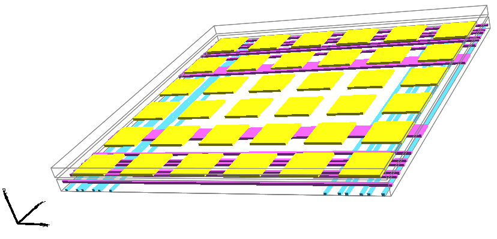

The 3D View is based on Java3D, the Java interface for interactive 3D graphics.
Because not everyone has a full 3D capability on their computer, the 3D facilities are dependent on
these extra plugins:
|
To see the 3D view of a layout cell, use the 3D View command (in menu Window / 3D Window). The cell is displayed in 3D, and mouse movements will rotate, pan, or zoom the circuit. Use the left button to rotate, the right button for panning, and the middle one for zooming. When zooming, drag the middle button in one direction to zoom in, and the other direction to zoom out. Standard pan and zoom operations (in menu Window) are also available (see Section 4-4-1 and Section 4-4-2).
Each layer of a node or arc is drawn as a separate object in the 3D view. If you click on a node or arc in a 2D view, all of its layers will be highlighted in the 3D view. Conversely, clicking on any layer of a node or arc in the 3D view will show the entire component in the 2D view.
 | Cell instances will be drawn as bounding boxes if they are unexpanded (top illustration), and will show their contents if expanded (bottom illustration). |
If you are running on Windows and are using MDI mode (multiple document interface) the 3D display may not work properly. See Section 1-4 for instructions on running Electric in SDI mode.
Because Java3D makes use of the graphics hardware on your computer, it may be useful to test that hardware with the Test Hardware command (in menu Window / 3D Window).